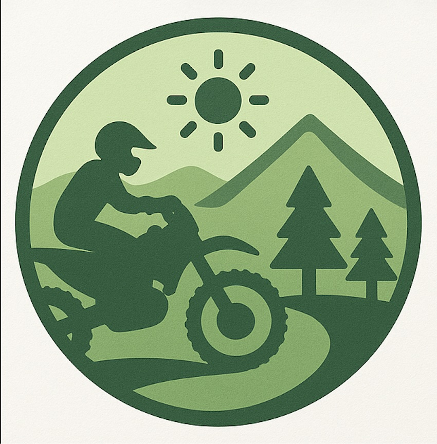
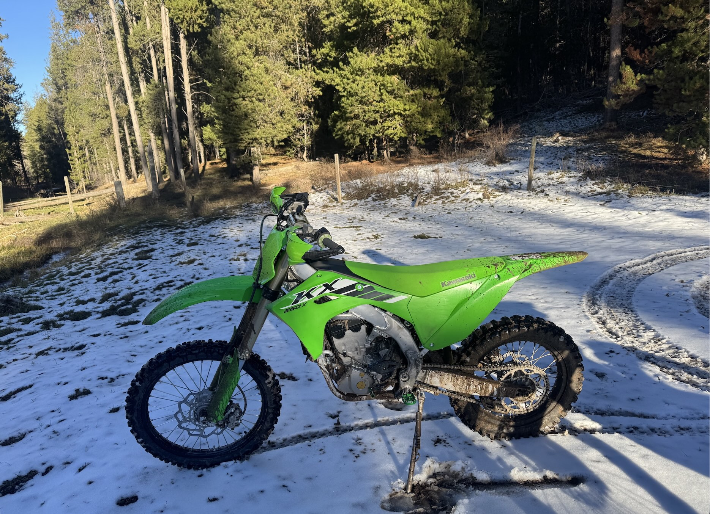

Search Trails
Welcome to Search Trails! A website where you can find any trail you want to ride. Whether it is dirt, dessert, in a forest, or a single track, we got it all.

Simply hit the 'Start Searching' button and type in anything that you are wanting to ride on and see the results!
Also when you are done simply hit the logo to go back to the homepage!